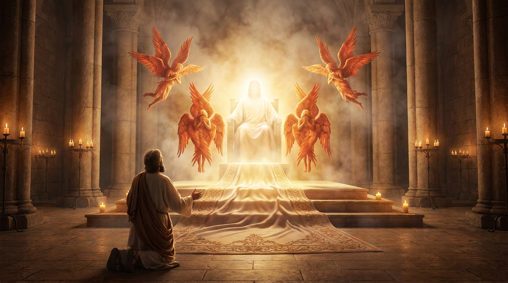

O Julgamento, o Consolo e o Messias
O livro de Isaías é uma das obras literárias e proféticas mais grandiosas de toda a Bíblia. A primeira metade do livro alerta severamente Judá e as nações vizinhas sobre o julgamento de Deus devido ao pecado e à rebelião. A segunda metade, porém, muda radicalmente de tom, trazendo mensagens de profundo consolo, promessas de libertação e, o mais importante, a profecia detalhada sobre o "Servo Sofredor" — o Messias que viria para salvar a humanidade através do Seu sacrifício.
Ficha Técnica
- Autor: O profeta Isaías.
- Tema Principal: A santidade de Deus, o julgamento do pecado, a salvação e a vinda do Messias e do Seu Reino.
- Versículo-Chave: "Mas ele foi transpassado por causa das nossas transgressões, foi esmagado por causa de nossas iniquidades; o castigo que nos trouxe paz estava sobre ele, e pelas suas feridas fomos curados." (Isaías 53:5)
Estrutura
- Mensagens de alerta e julgamento (Caps. 1-35)
- Transição histórica: O rei Ezequias e a ameaça assíria (Caps. 36-39)
- O livro do consolo: Livramento e a obra do Servo Sofredor (Caps. 40-55)
- A futura glória, os novos céus e a nova terra (Caps. 56-66)